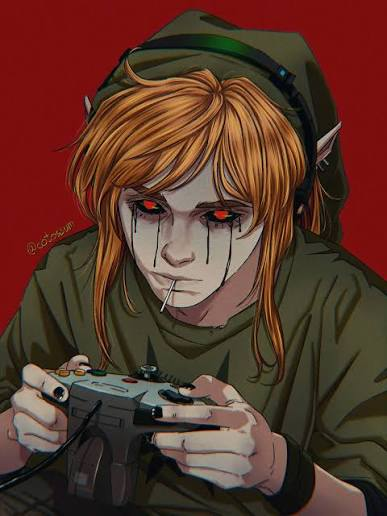

FILE_001.jpg
?
SLENDER MAN
Una figura alta, sin rostro, que aparece donde nunca debería estar.
[ BASE DE DATOS NO AUTORIZADA ]
Un archivo de leyendas, imágenes perturbadoras y registros que alguien intentó borrar de la red.
ACCEDER AL ARCHIVO ↘ADVERTENCIA: algunos registros están incompletos.
// REGISTRO 00 — INTRODUCCIÓN
Antes de los algoritmos y las redes sociales, existían foros, páginas abandonadas y archivos compartidos sin explicación. Algunas historias nacieron como ficción. Otras se hicieron famosas porque nadie podía demostrar qué había detrás.
// DIRECTORIO PRINCIPAL
Una figura alta, sin rostro, que aparece donde nunca debería estar.
Un rostro convertido en leyenda dentro de los foros de terror.

FILE_003.png 404Una copia de Majora's Mask, una partida extraña y mensajes imposibles.
Relatos de una criatura que aparece durante la noche y observa en silencio.
Una imagen viral que se convirtió en una de las leyendas urbanas de internet.
Una imagen que, según la leyenda, nunca deberías compartir ni volver a mirar.
ERROR 404: NO SE ENCONTRARON ARCHIVOS.
// MATERIAL RECUPERADO
Archivos visuales recuperados de directorios desconocidos. Seleccioná una evidencia para verla en detalle.
// TERMINAL REMOTA — ACCESO LIMITADO
Algunos comandos devuelven respuestas que no deberían existir.
ARCHIVE OS [versión desconocida]
Escribí ayuda para ver los comandos disponibles.
NO INTRODUZCAS INFORMACIÓN PERSONAL.